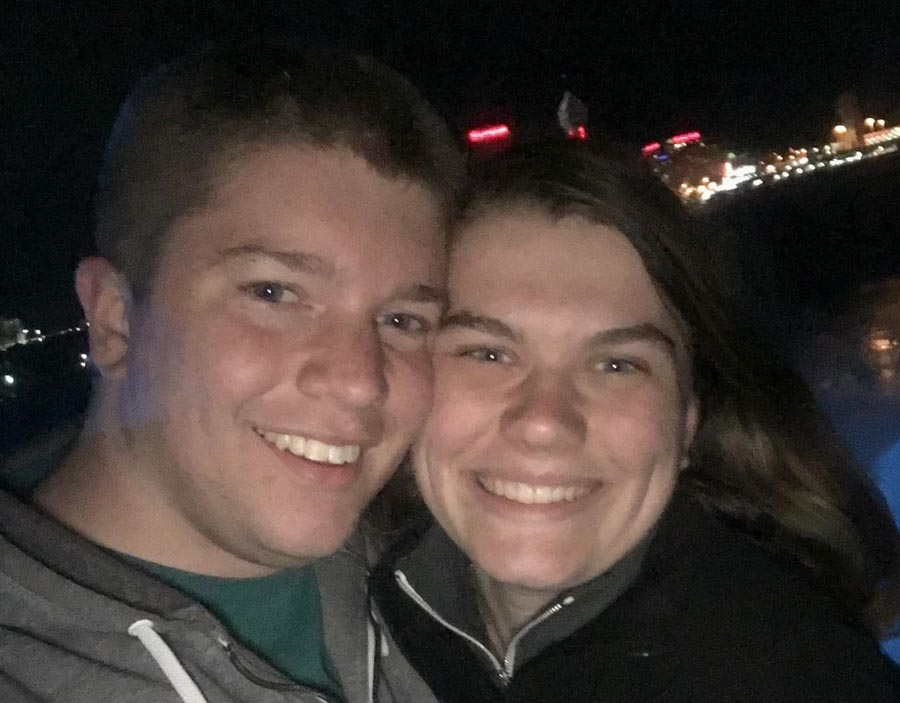
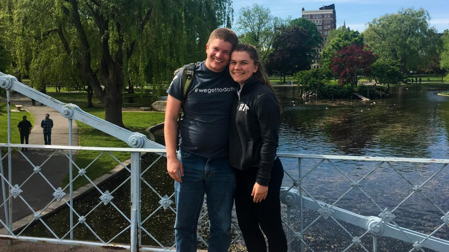

We Met
Standing around a campfire in Annika's backyard during a Cru afterevent. We talked for about 15 minutes and both left that conversation wanting to become friends. Right after we finished our conversation and went to talk to other people, Annika came up to Tim and teased him by calling our relationship
We Became Friends
Over the course of December our paths started to cross more often. We found each other starting to seek out time with each other and getting to know each other more.
We Grew Closer together
As we went through winter break, we started to talk more on the phone. Both of us trying to find excuses to start conversations, leading a some very long and late night FaceTimes. As we came back to campus after the break we started hanging out more and more, sharing our stories with each other, and even signed up for a class together. We both were starting to realize it was possible that this relationship would grow into something more.
Same Day
After realizing the path this relationship could go, Tim decided to share that he had feelings for Jennie. So on a Wednesday night he nervously started a conversation that went like this:
Tim: "Where do you see this relationship going?"
Jennie: "You go first."
Tim: "I have feelings for you. I want to become closer friends with you first but I think I want to date you in the future."
Jennie: "Same."
Our First Date
On a snowy Saturday night, Tim asked Jennie to go out on a date. We took an Uber to Jennie's favorite spot for dinner, Pi Craft. We then walked to Abbotts for some frozen custard, and then across the street to a movie theater, where we watched The Greatest Showman and held hands :).
Valentines Day
A few days after our first date....on valentines day, Jennie shared that she wasn’t comfortable moving towards dating at that point, so we took a step back in our relationship....and it was kinda awkward.
Awkward Friendship
As time went on, it was clear that we both still had feelings for each other, but Jennie was still choosing to wait. We awkwardly were friends, going on weekly "not dates" to Pi Craft, and continuing to take a wellness class together. As time went on, we slowly grew closer together.
Jennie changed her mind
We were hanging out at Jill's house, celebrating the end of the semester and Jennie pulled me inside to refill her water bottle. Standing in Jill's kitchen, Jennie shared that she was ready to date after the summer.
Our Second Date
Tim had gone up to Buffalo to visit his friend Jackson, and Jennie was also in Buffalo visiting her brother at college. Tim ditched Jackson, picked Jennie up, and we went to Niagara Falls US, getting there at 11pm. We walked around the falls virtually alone as it was so late and quiet.
We Made It Official
We took a trip to Boston to visit Josh and Maddy, and on Friday afternoon, while Josh and Maddy were at work, Tim asked Jennie out at Boston Common.
She Says Yes
At an undisclosed location, on an undisclosed date.
We Say I do
At an undisclosed location, on an undisclosed date, with the tables organized by locations.